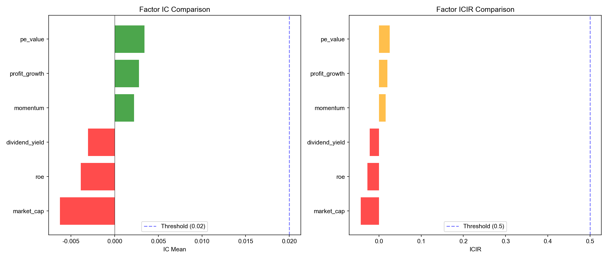

生成时间: 2026-02-17 12:29:39

| 因子 | 周期 | IC均值 | ICIR | IC胜率 | 多空收益 | 评估 |
|---|---|---|---|---|---|---|
| momentum | 5d | 0.0022 | 0.0156 | 52.23% | -0.0512% | 弱效 |
| momentum | 10d | 0.0041 | 0.0284 | 52.20% | -0.1147% | 弱效 |
| momentum | 20d | 0.0043 | 0.0298 | 52.76% | -0.1940% | 弱效 |
| roe | 5d | -0.0039 | -0.0271 | 50.00% | -0.0623% | 无效 |
| roe | 10d | -0.0054 | -0.0379 | 49.96% | -0.0998% | 无效 |
| roe | 20d | -0.0148 | -0.1026 | 48.87% | -0.3262% | 无效 |
| dividend_yield | 5d | -0.0030 | -0.0216 | 49.08% | 0.0040% | 无效 |
| dividend_yield | 10d | -0.0080 | -0.0575 | 47.88% | -0.0560% | 无效 |
| dividend_yield | 20d | -0.0105 | -0.0758 | 46.61% | -0.0654% | 无效 |
| pe_value | 5d | 0.0034 | 0.0253 | 51.77% | -0.0188% | 弱效 |
| pe_value | 10d | 0.0036 | 0.0265 | 52.36% | 0.0307% | 弱效 |
| pe_value | 20d | 0.0012 | 0.0086 | 51.83% | 0.0370% | 弱效 |
| profit_growth | 5d | 0.0028 | 0.0201 | 51.15% | 0.0228% | 弱效 |
| profit_growth | 10d | 0.0044 | 0.0327 | 50.81% | 0.0435% | 弱效 |
| profit_growth | 20d | 0.0036 | 0.0270 | 49.73% | 0.1344% | 弱效 |
| market_cap | 5d | -0.0063 | -0.0431 | 48.54% | -0.0313% | 无效 |
| market_cap | 10d | -0.0136 | -0.0974 | 45.56% | -0.1575% | 无效 |
| market_cap | 20d | -0.0170 | -0.1272 | 45.99% | -0.3436% | 无效 |
基于IC分析，建议保留IC均值 > 0.02 且 ICIR > 0.5 的因子。